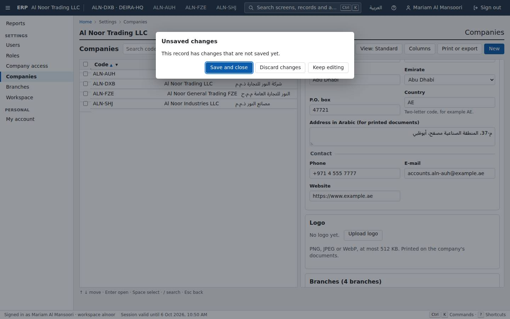
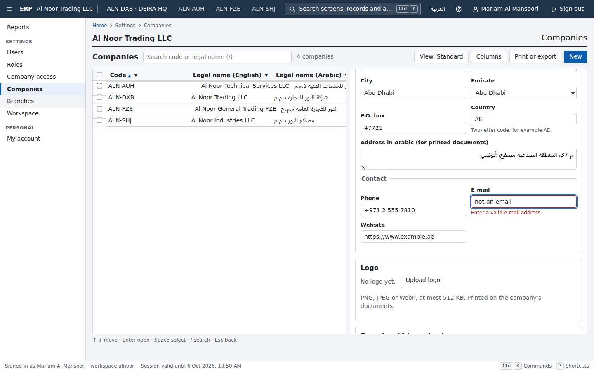
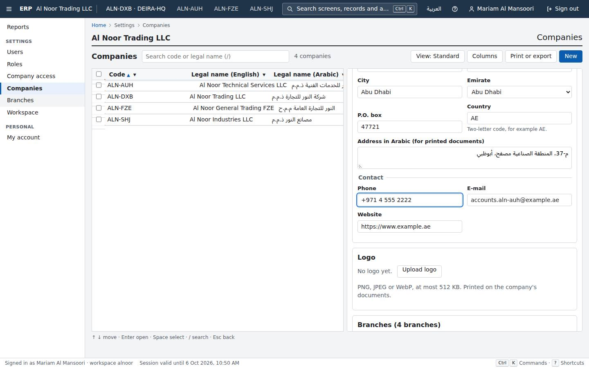
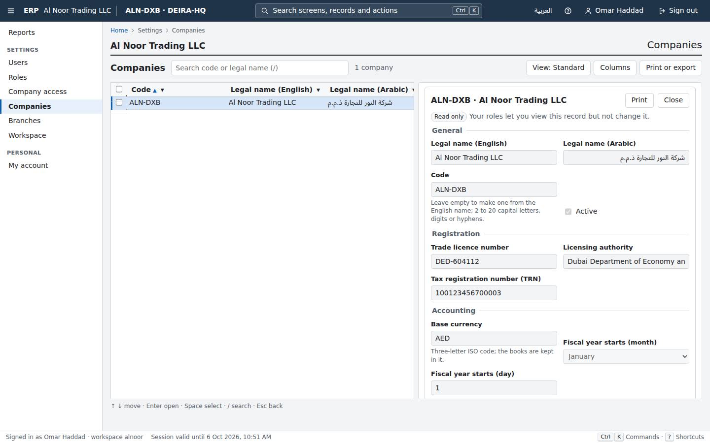
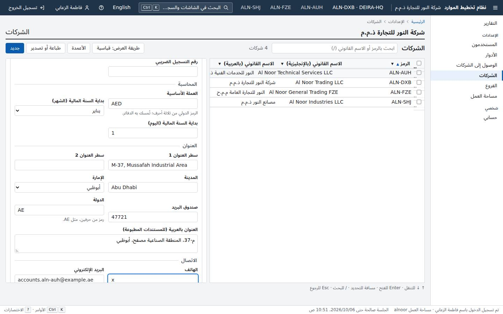
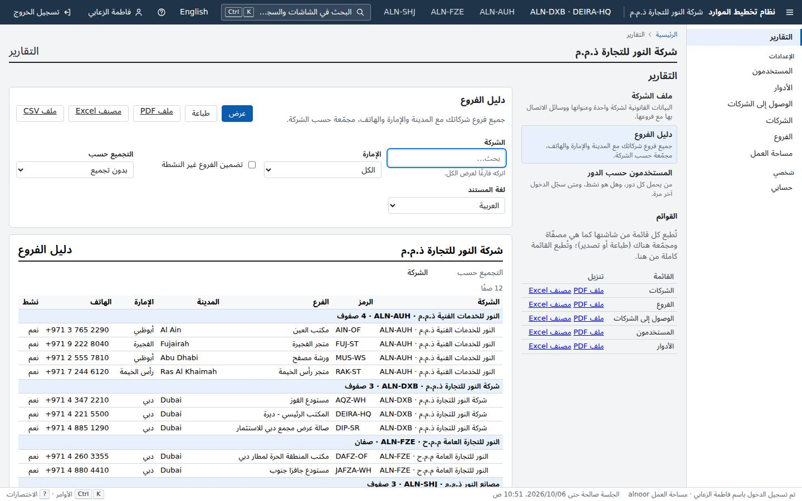
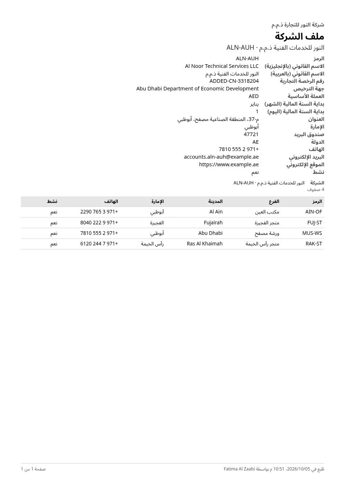
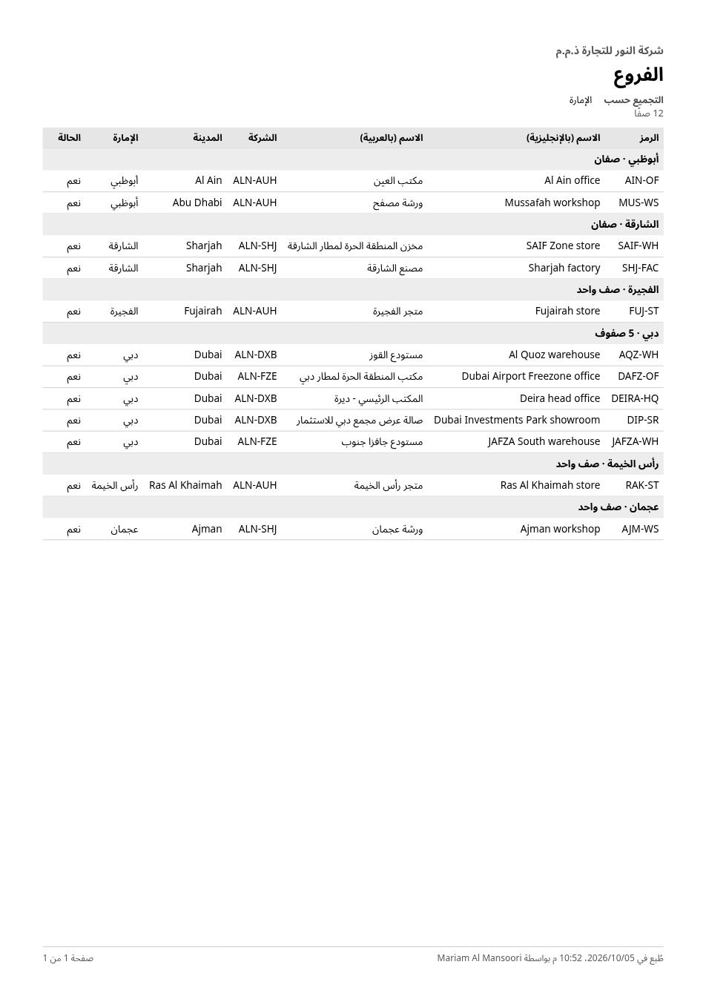

Gauntlet progress
Platform core, judged piece by piece against the owner's bar and Odoo Community. Rebuilt from gauntlet/verdicts/ by gauntlet/tools/record.mjs. Full evidence in ledger.md; owner items in needs-human.md.
Foundation and hard gates
Wave 0 · 5 rounds judgedThe only task p00 is compared on is 'sign in to an empty workspace'. Our sign-in screen only beats Odoo when it remembers the e-mail and focuses the password field (the returning-user path). An empty/first-time workspace has no remembered e-mail, so both products need the identical shortest expert path: type e-mail, Tab, type password, Enter. That is 4 steps, 57 keystrokes and 19.06 modelled human seconds in each product, so the task ties on every human-facing metric and ours wins only machine seconds, which the owner's bar does not count as a win ('a tie is a loss'). To actually beat Odoo on the empty-workspace sign-in, reduce the human path itself for a first visit (for example: a single combined credential submit, passkey/WebAuthn as the default, a magic-link or one-tap that removes the password field, or autofocus plus Enter-to-submit from the e-mail field that skips the Tab) rather than relying on a remembered e-mail that does not exist on an empty workspace.
- G3 clean clone: ./erp verify (build, migrate, seed, all tests) NOT-RUN — Fresh clone at eab97e5 to /home/user/critic/p00-foundation-r5; ran ERP_PROJECT=c-p00-foundation-r5 ERP_HTTP_PORT=20050 ERP_DB_PORT=20051 ERP_VERIFY_HTTP_PORT=20060 ERP_VERIFY_DB_PORT=20061 ./erp verify. Web unit stage passed (0 failed, 192.8s), e2e setup migrated+seeded alnoor and gulfsteel, .NET 'Build succeeded' (warnings-as-errors). The .NET unit/integration/gate stage was still executing at the critic's time cutoff under machine load 25->56, so a full pass could not be confirmed. No failure observed in any completed stage. See verify-partial.log.
- G3 clean clone: ./erp up (running seeded demo) NOT-RUN — Not reached before cutoff; the verify e2e stage's own stack migrated and seeded (alnoor 100k + gulfsteel) successfully, which exercises the same setup path.
- G1 tenant isolation (product, live HTTP/DB attack by critic) NOT-RUN — Not executed (demo not brought up before cutoff). Code review: erp_app role is created LOGIN NOSUPERUSER NOBYPASSRLS NOINHERIT and owns no table (DatabaseSetup.cs); every tenant table has RLS enabled+forced with USING(tenant_id = erp.current_tenant_id()); current_tenant_id() is transaction-local (app.tenant_tx guard), failing closed. Not independently verified live this round.
- G1 gate catches a planted tenant leak (p00 surface) NOT-RUN — A T1d-style leak (ErpDbSession.SupportWorkspaceAsync enumerates request headers for 'Erp-Support-Workspace' and transaction-locally set_config's app.tenant_id to another tenant, called from UnitOfWorkFilter) was staged in /home/user/critic/p00-r5-plant with source-gate counts neutralised, but the gate suite could not be built/run before cutoff. Static reading indicates it would be caught by RequestInputRecorder.Enumerations (the header loop is recorded on every request, type not in request-input-enumeration.txt) and by TenantBindingRules.TenantValueViolations (set_config value != principal). The suite already carries in-tree self-tests for this exact class (GateSelfTests: leaky.silent value-trace, 'headers by LeakyModule' enumeration).
- G2 permissions (product + gate catches a planted no-permission action) NOT-RUN — A P2-style plant (POST /api/platform/cache/clear carrying RequiresPermission metadata but only .RequireAuthorization()) was staged in /home/user/critic/p00-r5-plant; not built/run before cutoff. Static reading: G2PermissionTests 'A_user_whose_roles_grant_nothing_is_denied_everything' and 'Granting_exactly_one_permission_opens_exactly...' would flag it (a no-roles/other-permission user gets 204 instead of 403).
– / – passed
0 failed · 0 skipped
Clean clone → demo: NOT-RUN
| Task | Ours | Odoo | Winner |
|---|---|---|---|
| sign in to an empty workspace | 4 · 57 · –s · 19.06s | 4 · 57 · 2.578s · 19.06s | tie |
Round 5 · judged 2026-10-05T01:21:52Z · commit eab97e55ef
Odoo reference rig and blind comparison harness
Wave 0 · 4 rounds judgedRound 4 closed the browser side: fresh start context, page script refused, start state checked. The Node process the drivers run in is still open in three ways. (1) Network: installNetworkGuard patches only globalThis.fetch and http/https.request, and only on the first execute(). run.mjs loads every driver before that, so a fetch captured when the module loads is the raw one. process.getBuiltinModule('node:child_process' | 'node:net' | 'node:worker_threads') reaches the back end with no patch at all. The driver lint does not forbid getBuiltinModule or a captured fetch. (2) Timer: verify() runs after the clock stops, with the page's default timeout back at 120 s, and Locator.waitFor is allowed while verifying. A driver can return from run() right after its last click and let verify() wait for the end state for free. The README promises machine seconds run 'to the verified end state on screen', but nothing enforces it. (3) Paste: the PASTE regex misses Playwright's 'ControlOrMeta+v'. The copy-before-paste rule accepts any copy chord, even one with nothing selected, so set-up's clipboard is still pasted. Fixes: install the network guard before any driver loads. Forbid process.getBuiltinModule, process.binding and global captures of fetch in the lint, and refuse them at run time (wrap process.getBuiltinModule, or run drivers in a worker or vm with no process). Make verify() a single read with a short timeout, and require the end state to be on screen when run() returns: check it right at finish(), or let verify poll at most once. Normalise chords (ControlOrMeta, case, order) before matching paste. Require that the pasted text was selected and copied inside the measured part, for example by tracking the copied selection's text. Add each of my plants as a self-test.
- G1 tenant isolation (product as built) PASS — Every G1 test passed in ./erp verify. My HTTP attack (attack/http-attack.mjs, http-attack.out) ran as the alnoor admin against gulfsteel. It covered all 44 documented operations: 1,321 requests using B's 50 user ids, role ids, tenant id and code, e-mails and a fresh canary. These went into routes, search, tenantId and filter ('id in (...)') parameters, and six tenant-switch header and cookie variants. Every PUT, POST and DELETE on B's ids was tried, and so was a POST of a user carrying B's role ids. Result: 0 of 105 markers appeared in any body or header, no write on a B id was accepted, and B's users and tenant were unchanged. As erp_app (attack/db-attack-app-role.txt): unbound, 0 users and 0 tenants. With the GUC set but no transaction marker, 0 rows. Bound to A, only A's 100,004 users were visible. UPDATE on B's rows changed 0 rows. INSERT into B was refused by RLS. DISABLE RLS was refused (not owner). SET ROLE erp_owner and SET ROLE erp_auth were denied. All 9 tenant tables have RLS enabled and forced. No exports, jobs or file paths exist yet.
- Instrument integrity: the harness catches faults planted in the measuring instrument (this piece's surface) FAIL — Five stand-in plants were all MISSED (plants/zz-critic-r5.test.mjs, plants/critic-r5-plants.log). Control: the honest path ran 3 steps, 10 keys, 2.175 s against a 2 s server answer. T2 (wrong timer): run() returns after the click, and verify() waits for the end state with Locator.waitFor (allowed in verifying, 120 s timeout). Result 'verified' at 0.107 s machine and 0 s wait. U4 (uncounted action): a fetch captured when the module loads acts during the measured part. run.mjs loads drivers before the first execute() installs the network guard. Result 'verified' at 1 step instead of doing the work. U5: process.getBuiltinModule('node:child_process') runs curl against the back end while measured. It passes both the runtime guard (only fetch/http/https are patched) and the driver lint. Result 'verified', 1 step. C2: text copied in set-up and pasted with 'ControlOrMeta+v', which the PASTE regex does not match: 10 characters for 2 keys. C3: an empty Control+c inside the measured part satisfies the copy-before-paste rule, then Control+v pastes set-up's clipboard: 10 characters for 4 keys. Both paste plants ended 'verified'. Two plants in real ours drivers also stayed 'verified' against my demo (plants/real-driver-plants-run.log). U5 in api-update-user (plants/plant-U5-api-update-user-child-process.diff) sends the PUT through a child process: 1 step, 56 keys, 0.126 s, human 17.43 s. That beats Odoo's 2 / 184 / 0.733 / 54.62 on every metric, so the recorded LOSS becomes a WIN. T2 in create-restricted-user (plants/plant-T2-...diff) drops the save wait: 0.58 s against an honest 0.91-1.41 s. With both real-driver plants applied, the harness suite stayed green: 146/146, lint included (plants/npm-test-with-real-driver-plants.log). The round-3 start-state plant H2, replayed on find-user, is still caught: the run ends in error, never a win (plants/r3-H2-replay.log).
- G2 permissions (product as built) PASS — Every G2 test passed in ./erp verify: undeclared endpoints fall back to deny; a user with no roles is denied everything and sees no menu; one permission opens exactly its endpoints; no grant beyond the caller's own; writes may not declare read permissions. p01 adds no product endpoint.
- G3 clean clone PASS — Run from a fresh clone at 09d6d2c with ERP_PROJECT=c-p01-odoo-rig-r5 and ports 20150/20151/20160/20161. `./erp verify` returned rc=0 in 1889 s: 583 tests passed and the ratchet passed (verify.log). `./erp up` returned rc=0 in 64 s (up.log). With ERP_SEED_USERS_CSV set, `./erp up` returned rc=0 in 74 s with 100,004 users (up-shared-dataset.log). The private Odoo rig (ODOO_REF_PROJECT=c-p01-odoo-rig-r5-odoo, ODOO_REF_PORT=20152) came up from empty volumes with rc=0 in 254 s. Every main list reached 100,000 or more and Arabic was active. A second run took 13 s with +0 in every step (rig-up-first.log, rig-up-second.log, rig-volume.json). Port and project overrides work as documented.
- Rule gates (licence, float money, EN/AR strings, audit, OpenAPI, ratchet) PASS — All pass in ./erp verify. Ratchet minimums are met and no count fell. dotnet 273 (round 3: 245), web 119 (89), e2e 45 (31), compare 146 (115). The built-ours-driver health check verified all six built drivers. The harness's only dependency is playwright-core 1.56.1 (Apache-2.0, pinned).
583 / 583 passed
0 failed · 0 skipped · 1889s
Clean clone → demo: PASS in 1889s
| Task | Ours | Odoo | Winner |
|---|---|---|---|
| sign-in (p00) | 2 · 21 · 0.359s · 7.63s | 4 · 57 · 2.001s · 19.06s | ours |
| find-user (p03) | 4 · 20 · 0.619s · 14.35s | 6 · 21 · 2.828s · 13.2s | odoo |
| api-update-user (p15) | 2 · 243 · 0.389s · 71.14s | 2 · 184 · 0.733s · 54.62s | odoo |
| switch-to-arabic (p04) | 1 · 0 · 0.085s · 2.65s | 6 · 1 · 3.061s · 15.28s | ours |
| create-restricted-user (named; p03) | 5 · 35 · 1.373s · 21.65s | 10 · 46 · 10.079s · 28.7s | ours |
| reach-screen-keyboard (p04) | 2 · 3 · 0.188s · 3.15s | 3 · 8 · 1.074s · 3.99s | ours |
| find-record, custom-field-filter, import-5000, follow-approval, switch-company, add-rate, arabic-report, attach-file, configure-sequence, create-company-branch, edit-and-save, export-filtered-list, keyboard-navigation, see-and-rerun-job, who-changed-field | – | – | not-compared |


Round 5 · judged 2026-10-04T00:12:24Z · commit 09d6d2c7dd
Tenants, companies and branches
Wave 1 · 3 rounds judgedRound 3's misses are fixed: P3, C3 and C4 are now caught by G1 and G2 gates, as are all six new variants I planted. One part of the branch layer is still guarded only by hand-written tests. The branch attack treats branch Z's own rows as the victim. It never asks whether a user limited to one branch can change something every branch shares. With the 'needs every branch' refusal removed from PUT /api/tenancy/companies/{id} (plant P7), an administrator limited to one warehouse can rename the legal entity, change its TRN and trade licence, or deactivate the whole company, and every gate stays green. Only one module test fails. For a UAE group whose branch managers are given the Administrator role inside their own branch, that means a branch manager could take the Dubai LLC's legal identity offline for everyone. On screen, the tenancy screen gate checks branch scope only on the company record and logo. The real build offers a one-branch administrator the company's Add-branch line, New on the Branches screen and an editable branch Code, and the server refuses all three. The fix: in the branch attack, add the company record (and anything ICompanyOwned that every branch shares) to what a branch-limited attacker must not change, with a valid write to PUT /companies/{X} and the logo endpoints expected to be refused. Also extend screens.test.tsx so that, with everyBranch false, the branch line, New branch and the branch code disappear, and plant-test both.
- G1 tenant isolation: suite and hand attacks PASS — Every G1 test passed in ./erp verify (verify.log). I ran hand attacks as alnoor's administrator against gulfsteel (attack.log section 1). I tried GET, PUT and DELETE on B's company, logo and branch, a POST of a branch into B, a workplace switch to B's company and to B's branch, grants of B's company and branch, B's admin's access record, filters on B's ids, and tenant and company headers. I also tried B's company profile report (CSV and PDF), the branch directory filtered on B, list exports (CSV and XLSX) and an encoded path traversal on the logo. Every request got 404, 400 or an empty list. B's rows did not change (version 773 before and after). 200 concurrent cross-tenant company reads gave 0 wrong answers. RLS is enabled and forced on all 7 tenancy tables. erp_app is not a superuser and does not bypass RLS (db-inspection.txt). A suspended tenant's existing session gets 401 on the next request, and a new sign-in is refused (tenant-cli.log).
- G1 tenant isolation: planted tenant leak in this piece (T3, a new kind) PASS — Plant T3 (plants/batchY.diff) caches CompanyDto by company id in a DI singleton (an instance field, not a static), and GET /api/tenancy/companies/{id} serves from it. G1ProcessStateTests caught it: 'singleton Erp.Modules.Tenancy.Companies.CompanyCardCache.Items: a read-only field that holds a mutable ConcurrentDictionary<Guid, CompanyDto>' (plants/batchY-gates.log).
- G1 company and branch layer: round-3 plants (C3, C4) and new variants (C4b, C5, C6, P8) PASS — Every one was caught. C4, round 3's miss (company create without 'every company'), was caught by G1CompanyIsolationTests: 'POST /api/tenancy/companies [code]: company Y's value answered 409, a value that exists nowhere answered 201' (batchY-gates.log). C3, round 3's miss (branch filter off), was caught by G1BranchScopeAttackTests: '162 leaks of branch Z' (batchY). C4b (a company code change without 'every company') was caught: 'PUT /api/tenancy/companies/{X} [code]: company Y's code answered 409' (batchX-gates.log). C6 (branch create without 'every branch') was caught by the branch write oracle (batchX). C5 (GET one branch ignoring the branch filter) was caught: 'opening branch Z answered 200, expected 404' (C5-gates.log). P8 (a workplace switch to a branch the user may not use) was caught: '36 leaks of branch Z: PUT /api/tenancy/workplace' (batchZ-gates.log). Round 3's misses stay fixed.
- G2 permissions: planted grant and permission faults (P3, P3v, P10) PASS — P3 is round 3's biggest gap: it removes the 'user holds permissions the caller lacks' check. G2CompanyAccessGrantTests now catches it: 'by a user holding only the access permission who works in every company, removing the Administrator from company X: answered 200, expected 403' (batchX-gates.log). P3v (All changed to Any in the same check) fails the same gate (batchZ-gates.log). P10 (branch update guarded by tenancy.branches.create) was caught by the reviewed map: 'PUT /api/tenancy/branches/{id:guid} declares tenancy.branches.create; the reviewed map tenancy.txt says tenancy.branches.update'. It was also caught by the dead-permission check (batchX-gates.log).
- G1/G2 branch scope of company-level actions: planted P7 (one-branch user changes the shared company record) FAIL — P7 (plants/P7.diff) removes the 'needs every branch' refusal from PUT /api/tenancy/companies/{id}. With it, an administrator limited to one branch can rename the legal entity, change its TRN and trade licence, or deactivate the whole company for every branch. Every gate passed with P7 in place: G1BranchScopeAttackTests, G1CompanyScopeTests (2) and G2CompanyAccessGrantTests, 4/4 (plants/P7-gates.log). Only the hand-written module test GrantRulesTests.A_branch_limited_administrator_sees_reads_changes_and_gives_only_their_own_branch failed (plants/P7-tenancy-module.log). This is the same pattern that failed round 3 (C3 and P3 caught only by module tests). The branch attack treats only branch Z's rows as the victim, never the company record that every branch shares.
- G2 screens hide what the user cannot do (tenancy screens) FAIL — Real fault, not planted. I created a user with the Administrator role limited to ALN-DXB branch AQZ-WH. The company form still offers the branch line with Add branch, the Branches screen offers New, and the branch form's Code field can be edited. The server refuses all three: 'Only someone who works in every branch of the company may create a branch or change a branch code' (ui-branch.log, 07-one-branch-admin-branch-line.jpg). The screen gate (web/src/modules/tenancy/screens.test.tsx) checks branch scope only for the company record and logo, so it passes. Planted U5 (access screen 'all branches' box enabled for a branch-limited caller) was caught by AccessPage.test.tsx (plants/U5-vitest.log). U4 was inert: the settings form is not drawn without tenancy.tenant.update (plants/U4-vitest.log).
- G3 clean clone: one command builds, migrates, seeds and passes all tests PASS — Fresh clone at 9de44bf. Command: ERP_PROJECT=c-p02-tenancy-r4 ERP_HTTP_PORT=20250 ERP_DB_PORT=20251 ERP_VERIFY_HTTP_PORT=20260 ERP_VERIFY_DB_PORT=20261 gauntlet/tools/verify-slot.sh ./erp verify. It took a slot at 01:29:55Z after waiting 3765 s, and 'verify passed in 2077 s'. Results: .NET 380, web unit 249, e2e 62 and compare 146, all passed with 0 skipped. The plant self-tests passed (client 12, identity screens 5, tenancy screens 17), and so did 'Ratchet check passed.' (verify.log).
- G3 clean clone: one command to the running seeded demo PASS — ./erp up with the same overrides served the seeded demo on :20250 in 68 s, image build included (up.log). Ports and the compose project can be overridden from the environment, as the README documents.
- Rule gates: licences, decimal money, English/Arabic, audit PASS — The rule gates pass in the suite. Tenancy has no float or money columns (db-inspection.txt). Every user write to a tenancy table has an audit row with actor_id: companies 9 inserts and 7 updates, branches 9, user_company_access 29 inserts and 2 deletes, user_workplaces 35, and so on. Seed rows are marked 'seed'. The Arabic company form has no English-only labels (ui-walk.log), and dir is rtl.
837 / 837 passed
0 failed · 0 skipped · 2077s
Clean clone → demo: PASS in 2077s
| Task | Ours | Odoo | Winner |
|---|---|---|---|
| create-company-branch (create a company with a branch) | 6 · 44 · 0.607s · 19.47s | 12 · 72 · 3.075s · 47.18s | ours |
| switch-company (switch the active company) | 1 · 0 · 0.099s · 2.65s | 2 · 0 · 0.474s · 5.3s | odoo |


Round 4 · judged 2026-10-07T02:05:19Z · commit 9de44bff5e
Users, roles and permissions
Wave 1 · 3 rounds judgedG2AccountTakeoverTests, GrantBearingRecords and the screens-hide matrix always use the strongest record as the target: the Administrator, or a role holding the whole catalogue. Every caller they build holds only identity permissions. A check that compares only part of the target's grants therefore still answers 403 against the Administrator, and every gate passes. Plants P14 and P16 make UserAccess and the role grant checks compare identity.* permissions only. Result: a helpdesk clerk with users.update and resetPassword takes over the 'Workspace manager' (tenancy permissions). The clerk sets the manager's password, moves their sign-in, mints a role granting tenancy.tenant.update, and empties the manager's role. All 303 .NET tests and all 146 web tests stay green. Once Contacts, Purchasing and Accounting land, most strong accounts in a UAE trading company will hold non-identity permissions: the finance manager, the purchasing approver. This class of fault is exactly the one that lets a junior administrator take them over. Fix: - Aim every acting-on-a-user and acting-on-a-role probe at targets whose grants are disjoint from the caller's and only partly overlap them. Include one grant from every module in the catalogue, not only the Administrator, and include a test module the way ModulePermissionsTests does. - Add P14/P16 as gate self-tests. - Add a non-identity permission to the screens test catalogue and its stronger-user case (U2). - Separately, extend G1WriteOracle to name fields (L7): a role created by B, then A's same-name create, must answer like an unused name.
- G1 tenant isolation of the product as built PASS — My own attacks found no leak. As alnoor's admin I made 24 API calls against gulfsteel's admin, a second B user, the B Administrator role and the B Read-only role. They covered GET, PUT (including an e-mail move), password, unblock, revoke, DELETE, role PUT/DELETE/copy, create-with-B-role, search and filter by B values, a tenant query parameter and tenant headers. Every call by id answered 404, searches returned nothing of B's, B's records read back unchanged, and B's admin still signed in. I also hit B's private and shared saved views 12 ways: all 404 (attacks/attack-a-vs-b.txt). As erp_app: 0 rows with no tenant bound. Bound to A, 0 of B's rows and UPDATE 0. An insert into B was refused by RLS. A session-level or forged app.tenant_tx tenant was ignored. Credentials and sign_in_secret were denied, SET ROLE was refused, and RLS could not be disabled (attacks/db-app-role.txt). No export, job or file endpoints exist yet.
- G1 gate catches a tenant leak planted in this piece's surface FAIL — Plant L7 (plants/L7-role-name-registry.diff) keeps a role-name registry outside the tenant's rows, so POST /api/identity/roles and /roles/{id}/copy answer 409 identity.roleNameTaken for a name another workspace uses. With it in place all 93 gate tests pass (plants/plant-L7-gates.log) and so do all 74 identity tests (plant-L7-identity-tests.log). Proof (plants/CriticRoleNameOracleProof.cs, plant-L7-proof.log): tenant B creates 'JAFZA payroll …', then tenant A gets 409 for that name and 201 for an unused one. Without the plant both answer 201 (proofs-unplanted-control.log). G1WriteOracle judges only e-mail and code fields, so name fields are never checked for write oracles.
- G2 permissions of the product (restricted roles, escalation) PASS — No escalation was found in the shipped product. The Read-only user gets no New user or New role, the user panel shows only Details, What they can do and Close, the role matrix has 0 enabled checkboxes, and POST /api/identity/roles from that browser answers 403 (browser-walk.txt, screenshot 04). Unplanted, a helpdesk clerk gets 403 on all five partial-grant attacks (proofs-unplanted-control.log). Round 2's P5 is now caught: 3 G2 failures (plants/r2-P5-recheck-G2.log).
- G2 gate catches permission faults planted in this piece's surface FAIL — Plants P14 and P16 (plants/P14-P16.diff) make the access checks look only at identity.* permissions: UserAccess.WithinCallerAsync, and the role create, update, delete and copy grant checks. All 303 .NET tests pass: gates 93, identity 74, kernel 127, lists 6, tenancy 3 (plants/plant-P14-P16-all-dotnet.log). No e2e spec uses a non-identity permission. Proof (plants/CriticPartialGrantProof.cs, plant-P14-P16-proof.log): a clerk holding only identity permissions acts on a 'Workspace manager' (tenancy.tenant.read and update). The clerk resets the manager's password (200), moves their sign-in (200), creates a role granting tenancy.tenant.update (201), and renames and empties the manager role (200). UI plant U2, the same narrowing in the screen's beyondOwn check, passes all 146 web unit tests (plants/plant-U2-web-unit.log).
- G3 clean clone: one command builds, migrates, seeds, tests PASS — On a fresh clone of c02d93a, ./erp verify with ERP_PROJECT=c-p03-identity-r3 and ports 20350, 20351, 20360 and 20361 finished with rc=0 in 1795 s. All 643 tests passed and the ratchet check passed (verify.log).
- G3 clean clone: one command to running seeded demo PASS — ./erp up took 64 s, seeding 100,004 users in alnoor and 1,004 in gulfsteel (up.log). With ERP_SEED_USERS_CSV pointing at the shared dataset it took 90 s (up-dataset.log).
- Rule gates (licences, money, strings, audit) and ratchet PASS — These passed inside verify and the ratchet check passed. In the database, audit rows exist for inserts, updates and deletes on users, roles, user_roles, user_credentials and sessions, with field-level changes and the actor recorded, for example is_active old true, new false (audit-sample.txt).
643 / 643 passed
0 failed · 0 skipped · 1792s
Clean clone → demo: PASS in 1859s
| Task | Ours | Odoo | Winner |
|---|---|---|---|
| create-restricted-user | 5 · 37 · 0.769s · 19.56s | 10 · 46 · 6.556s · 28.7s | ours |
| find-user (find one user among 100,000) | 3 · 9 · 0.584s · 9.97s | 6 · 9 · 2.195s · 9.84s | odoo |


Round 3 · judged 2026-10-04T02:54:30Z · commit c02d93a8dd
English/Arabic app shell
Wave 1 · 4 rounds judgedG1's write-after-write and non-interference phases build every write body from the first documented enum value. TenantActivity.OwnLeaf hard-codes language 'en' and numerals 'latn', and OpenApiDocument.BuildBody(useDocumentedValues) returns enum[0]. So no tenant pair ever sends language 'ar' or numerals 'arab', and the code paths behind them are never attacked. Those are this piece's own features and half of the UAE market's users. Any state that leaks between tenants only on the Arabic path (a cache keyed by language, a per-locale formatter memo, a shared file or a header set only for Arabic) ships unseen. Fix (gate machinery in TenantActivity/OpenApiDocument, owned with p00): for every write endpoint, run the tenant-B-then-tenant-A write pairs and the non-interference comparison once per allowed value of every enum or AllowedTextValues field (at least every value of language and numerals), with B and A using the same value. Add 'g1.enumValuesAttacked' to the ratchet, and keep plant L1 as a gate self-test.
- G3 clean clone: one command builds, migrates, seeds and passes all tests FAIL — verify.log: ERP_PROJECT=c-p04-shell-r4 ... verify-slot.sh ./erp verify exited 1 ('verify stages failed: e2e'). The .NET stage passed (370/370) and so did web (192 unit, 146 harness). End-to-end passed 62/62. Then the stage's built-drivers health check failed: 'sign-in ours error ... (returning: error locator.waitFor: Timeout 120000ms exceeded.)'. Because of that, the timing budgets (stage 2/3) and the ratchet check (stage 3/3) never ran. I re-ran the same e2e+health sequence on a fresh stack (e2e-fresh-stack.log) and the sign-in task alone 11 more times (signin-repro, signin-repeat), and all passed, so the failure is intermittent. verify_cleanup deleted the failing run's result JSON, so its cause cannot be read.
- G3 one command to a running seeded demo PASS — ERP_PROJECT=c-p04-shell-r4 ERP_HTTP_PORT=20450 ERP_DB_PORT=20451 ./erp up served the seeded demo (100,009 users) in 114 s (up.log). Port and project overrides work.
- G1 tenant isolation of the product (my own attacks) PASS — attack-http.txt: as alnoor, B's user id gave 404, and a preferences PUT with B's userId/tenantId changed only A. A workplace PUT with B's company gave 400, B's company report 404, a CSV export searching 'gulfsteel' came back empty, and tenant headers were ignored. attack-db-app-role.txt: as erp_app, 0 rows with no tenant set, 0 of B's rows with A's tenant set, and UPDATE of B's rows gave UPDATE 0. Disabling RLS, SET ROLE and reading sign_in_secret were all refused. history-leak-recheck.txt: r3's one-tab Back leak is gone. No jobs or stored files exist yet.
- G1 gate catches a tenant leak planted in this piece's surface FAIL — Plant L1 (plant-L1-arabic-digits-leak.diff): PUT /api/identity/me/preferences keeps the last Arabic-Indic-digits caller's e-mail in a temp file and appends it to the next such caller's displayName. Gate run (plants-L1-N1-gates.log): G1HttpIsolationTests.Tenant_A_cannot_reach_tenant_B_through_any_endpoint PASSED (13 m 17 s), and so did G1NonInterferenceTests, G1ProcessStateTests and G1TenantSourceTests. Live on the planted build (plant-L1-live-demo.txt): admin@gulfsteel PUT {numerals:arab}, then admin@alnoor PUT {numerals:arab} returned displayName 'Mariam Al Mansoori (also using these digits: admin@gulfsteel.example)'.
- G1 client-state gate catches a planted client leak PASS — Plant C3 (plant-C3-palette-last-in-device-key.diff): the palette writes the last opened record into a new device key 'erp.paletteLast' that survives sign-out. clientIsolation.test.tsx failed with 'after B signed out: expected [gulfsteel, Zx81] to deeply equal []' (plants-web-vitest-fails.txt).
- G2 permissions on this piece's surface PASS — P3 (DELETE /api/identity/me/preferences with no permission): the host refused to start ('declares no permission') and all 114 gate tests failed (plant-P3-gates.log). N1 re-plant (preferences of another user named in the body): caught by G2SubjectTests ('named another user of the tenant and that user's rows in identity.users changed'). P2 (AppShell renders every route whatever the roles): caught by 3 vitest tests (offers only granted screens; users and roles toolbars).
- Rule gates (licences, strings EN/AR, accessibility, no float money, audit) PASS — Passed inside verify's web and .NET stages: the string gate, the accessibility check (917 JSX elements) and the rule tests in Erp.Gates.Tests (114/114). The N1 run shows a preferences change writes audit.entries.
779 / 780 passed
1 failed · 0 skipped · 2625s
Clean clone → demo: FAIL in 2625s
| Task | Ours | Odoo | Winner |
|---|---|---|---|
| switch-to-arabic | 1 · 0 · 0.109s · 2.65s | 6 · 1 · 2.591s · 15.28s | ours |
| reach-screen-keyboard | 2 · 3 · 0.138s · 3.15s | 3 · 8 · 0.953s · 3.99s | ours |
| open-third-user-keyboard (critic-added in r2, kept) | 6 · 7 · 0.212s · 6.41s | 8 · 13 · 1.29s · 6.74s | ours |
| keyboard-navigation (open the third contact by keyboard) | – | 9 · 10 · 1.2s · 7.25s | not-compared |


Round 4 · judged 2026-10-07T00:00:32Z · commit 3b3b0b6a53
List and search framework
Wave 1 · 2 rounds judgedEvery later module will register its lists with p05 and rely on G1 and G2 to attack them automatically. Two faults planted in p05's own code get past every gate. (1) G1: a process-wide memo kept in a static delegate field of ListBinding<T> passes both the process-state gate and the list-answer gate. The process-state gate skips statics of generic types as roots and counts Func fields as immutable. The list-answer gate never judges the total (or groups) on keyset continuation pages. The result is that one tenant scrolling to page 2 sees the other tenant's row count. (2) G2: a personal-route PUT/DELETE that also matches shared views lets a read-only user rename or delete the workspace's shared views without lists.views.share, and all 27 G2 tests pass. The G2 list test never sends a shared view's id to the personal routes, or a personal view's id to the shared routes. Fixes: (a) walk static fields of closed generic instantiations of product types, or reject delegate and closure fields unless reviewed, and walk delegate targets as ReachableState does elsewhere; (b) in ListAnswers, judge total and groups on every walked page, after the other tenant has walked the same query; (c) in G2, cross the ids: a reader sends the shared view's id to every personal route, and a sharer sends another user's personal view id to every shared route, and the workspace's views must stay unchanged.
- G1 tenant isolation (product as built) PASS — Gate suite green inside verify. My own attacks as admin@gulfsteel against alnoor (100,004 users from the shared dataset), in attack-api.txt, found 0 leaks: name, e-mail and filter searches for alnoor's needle, an OR-true filter, quote injection, % and _ wildcards, X-Tenant/X-Tenant-Id headers, tenant/tenantId query parameters, groupBy, alnoor's keyset cursor replayed, skip=99000, GET/PUT/DELETE on alnoor's shared and personal view ids (all 404, and both views were unchanged afterwards), and CSV/XLSX/PDF list exports. Database (db-inspect.txt): lists.saved_views has RLS enabled and forced with the standard policy, and erp_app has no BYPASSRLS. Unbound, erp_app sees 0 views and 0 users. Bound to gulfsteel it sees 0 alnoor rows, an INSERT for alnoor is refused by RLS, and an UPDATE of alnoor's rows touches 0 rows.
- G1 catches tenant leaks planted in p05's surface FAIL — Plant L6 (plants/L6-static-memo-next-page-total.patch) adds to ListBinding<T> a static readonly Func memo, a closure over a ConcurrentDictionary keyed by list|search|filter with no tenant. Continuation pages (after=) reuse the total that the last first page counted. All 38 G1 tests PASSED with it (plants/run-L6-g1.log, 16.6 min), process-state included (run-L6-processstate.log). Live on a plant stack (plants/plant-live-demo.txt): gulfsteel page 1 of search 'a' has total 1004, alnoor page 1 has total 3004, and gulfsteel page 2 then shows total 3004, which is alnoor's count. Two blind spots: (1) the process-state roots skip static fields of generic types (t.ContainsGenericParameters), and a delegate-typed field is judged immutable, so the captured dictionary is never reached; (2) ListAnswers judges only the first page's total and groups, never the totals of the keyset pages it walks. Gates that held: L7 (the same memo used for first-page totals) was caught by the list-answer check, with 102 wrong answers (run-L7-http.log), so r1's L3 gap stays fixed. L8 (a permissive SELECT policy on lists.saved_views) was caught by G1DatabaseIsolation (run-L8-db.log).
- G2 permissions (product as built) PASS — Gate suite green. Live: the viewer gets list read access, no share checkbox and only Copy among the bulk actions. noaccess gets 'No access' on the screen and 403 from the API.
- G2 catches unpermissioned actions planted in p05's surface FAIL — Plant P4 (plants/P4-personal-route-writes-shared-views.patch): the personal routes PUT/DELETE /api/lists/{key}/views/{id} find a view when it is shared OR the caller's own. All 27 G2 tests PASSED (plants/run-P4-g2.log). Live (plant-live-demo.txt): viewer@alnoor does not hold lists.views.share and gets 403 on PUT /shared-views/{id}. The same user gets 200 on PUT /views/{sharedId}, which renames the workspace's Team view, and 204 on DELETE /views/{sharedId}, which deletes it. Only Erp.Modules.Lists.Tests caught it (1 failure, run-P4-lists-module-tests.log), not the gate. The G2 list test sends only the administrator's personal-view id to personal routes and never a shared-view id. Gates that held: P2b (shared DELETE with the list-permission filter and handler check removed) and P3 (personal PUT/DELETE matched by id alone) were each caught by G2 (run-P2b…, run-P3…), so r1's P2 gap and p03's P3 route stay fixed.
- G3 clean clone PASS — Fresh clone at fdd08ee. ERP_PROJECT=c-p05-list-search-r4 ERP_HTTP_PORT=20550 ERP_DB_PORT=20551 ERP_VERIFY_HTTP_PORT=20560 ERP_VERIFY_DB_PORT=20561 run through verify-slot.sh ./erp verify passed in 1669 s, timed from 'slot taken' after a 5025 s wait for a slot. The ratchet check passed. ./erp up with ERP_SEED_USERS_CSV gave a running demo with 100,004 users in 93 s. The port and project overrides worked.
- Rule gates (licence, money, strings, audit, list index) PASS — These pass inside verify. Saved-view insert and delete, and the user bulk deactivation, write audit.entries rows with the actor and old/new values (checked in the database). Trigram GIN indexes exist on display_name/email_normalized and display_name_ar, plus (tenant_id, column, id) btrees.
889 / 889 passed
0 failed · 0 skipped · 1669s
Clean clone → demo: PASS in 1669s
| Task | Ours | Odoo | Winner |
|---|---|---|---|
| find-user (find one user among 100,000; p16 contacts not built, so the largest list, the dataset's 100,000 users) | 3 · 15 · 0.513s · 8.6s | 6 · 20 · 2.371s · 13.2s | ours |
| find-record (find one contact among 100,000) | – | – | not-compared |


Round 4 · judged 2026-10-07T03:22:12Z · commit fdd08eeabb
Form and report framework
Wave 2 · 1 round judgedPrinting and export are where a UAE trading company's data leaves the system (PDFs to vendors, Excel to accountants), and this piece owns that surface. A print store that ignores the tenant (here: files kept on disk by download name, the same 'Roles 2026-10-05.pdf' for every tenant) hands tenant B's users list and roles PDF to tenant A. Yet all 110 gate tests pass, G1HttpIsolation, non-interference and the reports isolation probe included. The probe attacks only as tenant A, and the victim's background activity never prints or exports. So nothing tenant B prints is ever there for A to receive. The gate needs tenant B to print and export every report and list (each format, both languages, same and different queries) before and during A's attack, and must judge A's PDFs, CSVs and workbooks for B's markers. Related: G2 accepts any permission a report definition names, so a report that prints companies under tenancy.workplace.read passes (plant P1).
- G1 tenant isolation (product as built) PASS — The gate suite passed inside verify (G1HttpIsolation 9 min, company isolation, non-interference, process state). I attacked as admin@gulfsteel against alnoor on the live demo: companyProfile with each of alnoor's 4 company ids in json/pdf/csv/xlsx × en/ar with X-Tenant-Id gave 404 every time. branchDirectory and usersByRole with alnoor ids gave 0 rows and 'Not found'. All 5 printable lists, searched for alnoor names, codes and Arabic text in csv and json with X-Tenant-Id/X-Company-Id headers, gave 0 alnoor values (the only hits were the attacker's own name). Company logo paths gave 404. Filters on alnoor company ids were refused (400). Database: erp_app has no BYPASSRLS and no superuser, and sees 0 company rows unbound and none of alnoor's when bound to gulfsteel. Details: attack-api.txt.
- G1 catches faults planted in p06's surface FAIL — Plant L2 (plants/plant-L2-printed-files-on-disk.patch) keeps printed PDF/CSV/XLSX files under /tmp/erp-printed, named by the download name (title + date + language + format), and serves them again. The whole gate project still PASSED: 110/110 (plants/run-L2.log). On a live stack the leak is real (plants/plant-L2-live-demo.txt): alnoor's admin prints the users CSV, then gulfsteel's admin prints its own and gets alnoor's file, 304 alnoor lines. The roles Arabic PDF comes back byte-identical. Likely cause: the victim tenant never prints or exports (format=pdf/csv/xlsx) before the attacker, so a print-side store fed by tenant B is never exercised. Plant L1 (an in-memory static cache of printed list documents) was caught three ways: process state, the HTTP attack (4,500 leaks) and the company oracle (plants/run-L1-P1-P2.log).
- G2 permissions (product as built) PASS — The suite passes. viewer sees the company form read-only: disabled fields, no Save, the reason shown. The catalogue lists only the reports the caller may run.
- G2 catches faults planted in p06's surface FAIL — Plant P1 (plants/plant-P1-report-wrong-permission.patch) puts the company profile report, with licence, TRN, address and branches, under tenancy.workplace.read instead of tenancy.companies.read. Plant P2 (plants/plant-P2-catalog-unfiltered.patch) removes the permission filter from /api/reports/catalog. With both applied, all 24 G2 tests PASSED (plants/run-L1-P1-P2.log; only the 3 G1 tests failed, for L1). G2 only checks that a report route declares the permission its own definition names; nothing ties a report's permission to the data its source reads. Web side: plant P3a (the kernel form ignores canEdit) was caught by 8 unit tests. P3b (the company form always editable) passed all 175 unit tests (plants/plant-P3-web.log); tenancy.spec.ts:94-95 looks as if it would catch it in e2e, but I did not run that.
- G3 clean clone PASS — Fresh clone at 8bf468f. `ERP_PROJECT=c-p06-form-report-r1 ERP_HTTP_PORT=20650 ERP_DB_PORT=20651 ERP_VERIFY_HTTP_PORT=20660 ERP_VERIFY_DB_PORT=20661 ./erp verify` passed in 966 s, ratchet passed (verify.log). `./erp up` gave the seeded demo (100,000 users) in 36 s (up.log). Port and project overrides worked.
- Rule gates (licence, money, strings, audit, reports) PASS — These pass inside verify. The fonts are OFL-1.1, which the owner approved on 2026-10-03 (needs-human #5), each listed with its sha256. A company save through the form writes audit.entries with the actor and old/new phone (checked in the database).
750 / 750 passed
0 failed · 0 skipped · 966s
Clean clone → demo: PASS in 966s
| Task | Ours | Odoo | Winner |
|---|---|---|---|
| edit-and-save | 3 · 17 · 0.126s · 9.72s | 4 · 19 · 0.18s · 10.28s | ours |
| arabic-report | 2 · 0 · 0.083s · 5.3s | 6 · 0 · 3.448s · 15.9s | odoo |
















Round 1 · judged 2026-10-05T19:06:27Z · commit 8bf468ff33
Audit trail
Wave 2 · 0 rounds judgedWaiting for its first critic.
Multi-currency
Wave 2 · 0 rounds judgedWaiting for its first critic.
Tenant-defined custom fields
Wave 2 · 0 rounds judgedWaiting for its first critic.
Document numbering
Wave 2 · 0 rounds judgedWaiting for its first critic.
Attachments
Wave 2 · 0 rounds judgedWaiting for its first critic.
Background jobs
Wave 2 · 0 rounds judgedWaiting for its first critic.
Approval flows
Wave 3 · 0 rounds judgedWaiting for its first critic.
Import and export
Wave 3 · 0 rounds judgedWaiting for its first critic.
Documented API for everything
Wave 3 · 0 rounds judgedWaiting for its first critic.
Shared Contacts directory
Wave 2 · 0 rounds judgedWaiting for its first critic.